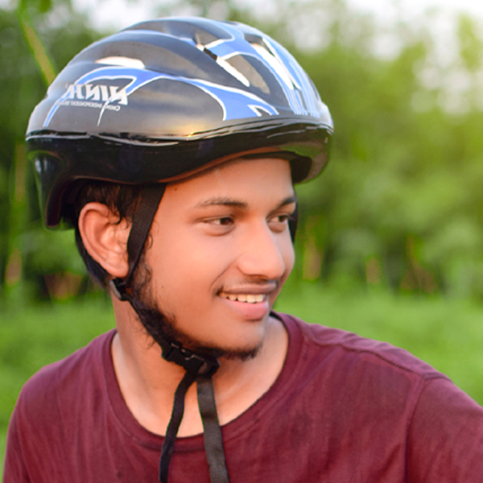
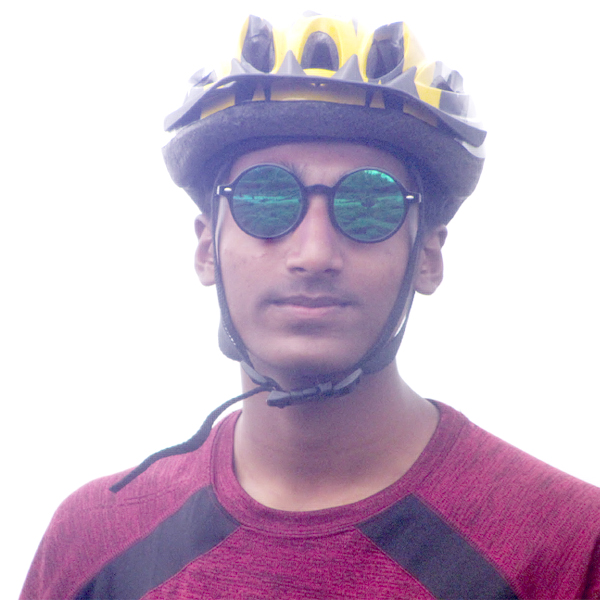
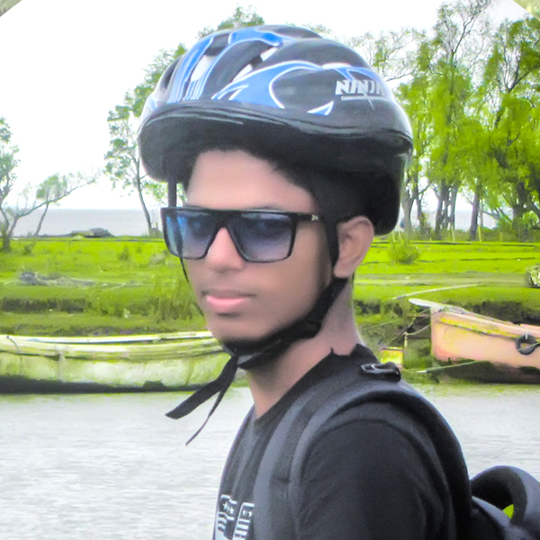
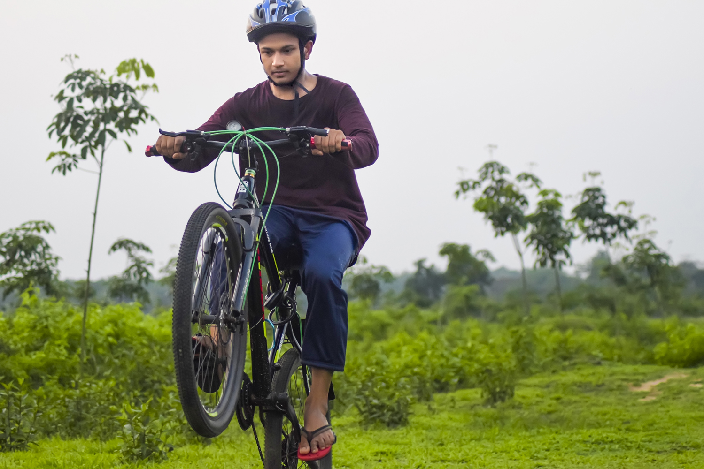

<!doctype html>
<html lang="en">
  <head>
    <!-- Required meta tags -->
    <meta charset="utf-8">
    <meta name="viewport" content="width=device-width, initial-scale=1, shrink-to-fit=no">
	<link rel="stylesheet" href="https://use.fontawesome.com/releases/v5.7.2/css/all.css" 
		integrity="sha384-fnmOCqbTlWIlj8LyTjo7mOUStjsKC4pOpQbqyi7RrhN7udi9RwhKkMHpvLbHG9Sr" 
			crossorigin="anonymous"/>
    <!-- Bootstrap CSS -->
    <link rel="stylesheet" href="https://stackpath.bootstrapcdn.com/bootstrap/4.3.1/css/bootstrap.min.css" integrity="sha384-ggOyR0iXCbMQv3Xipma34MD+dH/1fQ784/j6cY/iJTQUOhcWr7x9JvoRxT2MZw1T" crossorigin="anonymous">
	<link rel="stylesheet" href="style.css" type="text/css" />
    <title>My Design</title>
  </head>
  <body>


    <!-- Optional JavaScript -->
    <!-- jQuery first, then Popper.js, then Bootstrap JS -->
    <script src="https://code.jquery.com/jquery-3.3.1.slim.min.js" integrity="sha384-q8i/X+965DzO0rT7abK41JStQIAqVgRVzpbzo5smXKp4YfRvH+8abtTE1Pi6jizo" crossorigin="anonymous"></script>
    <script src="https://cdnjs.cloudflare.com/ajax/libs/popper.js/1.14.7/umd/popper.min.js" integrity="sha384-UO2eT0CpHqdSJQ6hJty5KVphtPhzWj9WO1clHTMGa3JDZwrnQq4sF86dIHNDz0W1" crossorigin="anonymous"></script>
    <script src="https://stackpath.bootstrapcdn.com/bootstrap/4.3.1/js/bootstrap.min.js" integrity="sha384-JjSmVgyd0p3pXB1rRibZUAYoIIy6OrQ6VrjIEaFf/nJGzIxFDsf4x0xIM+B07jRM" crossorigin="anonymous"></script>
  </body>
</html>


<html>
<head>
<title>

</title>
 <meta charset="utf-8">
    <meta name="viewport" content="width=device-width, initial-scale=1, shrink-to-fit=no">


</head>

<body>
<menu id="dharok">
<div class="mainlogo">

</div>

	<div id="dharok1">
		<ul class="mainmenu" type="none">
		<a href="#">	<li>More</li></a>
		<a href="#">	<li>FAQ</li></a>
		<a href="#">	<li>About</li></a>
		<a href="#">	<li>Contact</li></a>		
		<a href="#">	<li>Home</li></a>		
	</ul>
	

</div>
</menu>
<section>
	
</section>

<div id="slider">
<div class="mainhead"><h1>Heako Friend's Cyclist</h1></div>
<figure>
  
  
  
  
      
  
  </div>
</figure>
<section id="Members">
<div class="TourHead">
	<h1>Our <span class="color1">Member's</span></h1>
	</div>
	
<div id="continer">
<!-- Profile of Rejaul -->	
<div class="Mperson">	
	
	<div class="about">
	<h2>Hi I'm Rejaul</h2>
	<p>My hope is that I will win the world with a bike. Insha Allah</p>
	</div>
	<div class="sosialicons">
	<a target="blank" href="https://www.facebook.com/people/Rejaul-Raju/100008967761518">
	<i class="fab fa-facebook" ></i></a>
	<a target="blank" href="#"><i class="fab fa-instagram"></i></a>
	<a target="blank" href="#"><i class="fab fa-twitter-square"></i></a>
	</div>		
</div>

<!-- Profile of MOsharof -->		
<div class="Mperson">	
	
	<div class="about">
	<h2>Hi I'm Mosharof</h2>
	<p>My hope is that I will win the world with a bike. Insha Allah</p>
	</div>
	<div class="sosialicons">
	<a target="blank" href="https://www.facebook.com/masharrof"><i class="fab fa-facebook"></i></a>
	<a target="blank" href="#"><i class="fab fa-instagram"></i></a>
	<a target="blank" href="#"><i class="fab fa-twitter-square"></i></a>
	</div>		
</div>


<!-- Profile of Nasir -->	
<div class="Mperson">	
	
	<div class="about">
	<h2>Hi I'm Nasir </h2>
	<p>My hope is that I will win the world with a bike. Insha Allah</p>
	</div>
	<div class="sosialicons">
	<a target="blank" href="https://www.facebook.com/mdnasir.khan.948011">
	<i target="blank" class="fab fa-facebook"></i></a>
	<a target="blank" href="#"><i class="fab fa-instagram"></i></a>
	<a target="blank" href="#"><i class="fab fa-twitter-square"></i></a>
	</div>		
</div>

<!-- Profile of ismail oli -->	
<div class="Mperson">	
	
	<div class="about">
	<h2>Hi I'm Ismail</h2>
	<p>My hope is that I will win the world with a bike. Insha Allah</p>
	</div>
	<div class="sosialicons">
	<a target="blank" href="https://www.facebook.com/mdismail.oli"><i class="fab fa-facebook"></i></a>
	<a target="blank" href="#"><i class="fab fa-instagram"></i></a>
	<a target="blank" href="#"><i class="fab fa-twitter-square"></i></a>
	</div>		
</div>

</div>
</section>

<section>

<br/>
<br/>
<br/>

	<div class="article">

<br/>
<br/>
<br/>
<br/>

<p>To be fit and healthy you need to be physically active. Regular physical activity can 
 help protect you from serious diseases such as obesity, heart disease, cancer, mental illness,
 diabetes and arthritis. Riding your bicycle regularly is one of the best ways to reduce your risk 
 of health problems associated with a sedentary lifestyle.</p>
<br/>

<p>Cycling is a healthy, low-impact exercise that can be enjoyed by people of all ages,
 from young children to older adults. It is also fun, cheap and good for the environment.</p>
<br/>

<p>Riding to work or the shops is one of the most time-efficient ways to combine regular 
exercise with your everyday routine. An estimated one billion people ride bicycles every day –
 for transport, recreation and sport.</p>
 
<p>To be fit and healthy you need to be physically active. Regular physical activity can 
 help protect you from serious diseases such as obesity, heart disease, cancer, mental illness,
 diabetes and arthritis. Riding your bicycle regularly is one of the best ways to reduce your risk 
 of health problems associated with a sedentary lifestyle.</p>
<br/>

<p>Cycling is a healthy, low-impact exercise that can be enjoyed by people of all ages,
 from young children to older adults. It is also fun, cheap and good for the environment.</p>
<br/>

<p>Riding to work or the shops is one of the most time-efficient ways to combine regular 
exercise with your everyday routine. An estimated one billion people ride bicycles every day –
 for transport, recreation and sport.</p>
<br/>


	</div>
</section>

<footer>

<div class="end">

Copyright ©2019 All rights reserved Rejaul Raju

</div>

</footer>

</body>

</html>